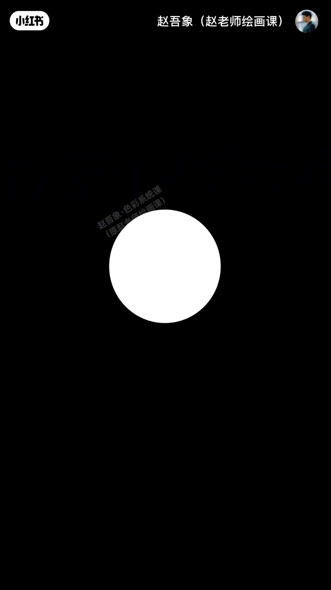
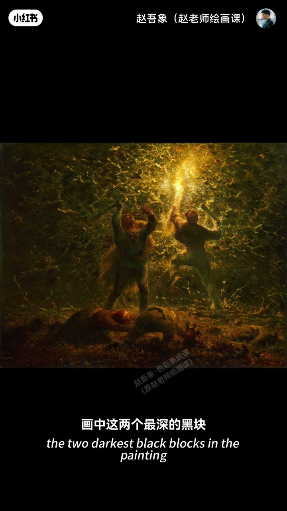
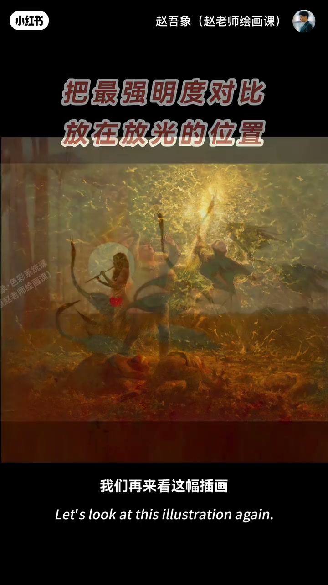
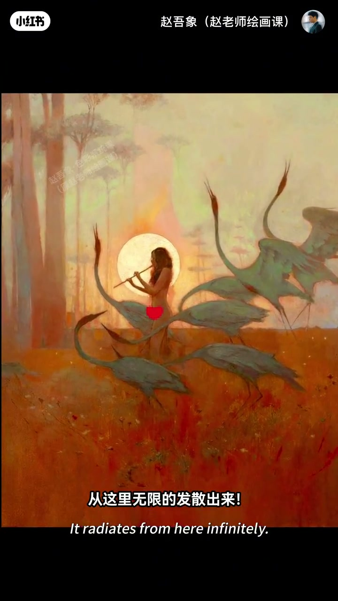

内容要点
测验：不能动这个纯白圆，怎么让它更亮？改周围关系即可——圆不变，感受全变。大师画光同思路：火光耀眼不只因周围暗，更因最深黑块紧紧压在火光旁，最亮与最暗相撞把光感推到高潮；暗部远离则火光立刻变弱。要把最强明度对比给到发光位置。月亮插画同样：光旁集中最深，别处刻意弱化对比。光感也不止明度，下期讲冷暖。
知识结构
白圆不动，只改周围关系也能更亮眼。
最深黑紧贴发光位；远离则弱；对比给光。
光旁集中深色、别处弱对比；预告冷暖光感。
画光先画关系：不是把发光处涂更白，而是把最强明度对比集中安放在发光位置。
00:00-00:23白圆测验：感受由关系决定
考题：不能动这个圆，怎么让它看起来更亮？已经是纯白似乎不可能；改周围之后——确实更亮眼。圆始终没变，只改变它和周围的关系，感受就完全不一样。大师画光用的就是这个思路。
00:12 黑底白圆是测验画面。

00:23-01:08火光：最深黑压在最亮旁
画中火光为何耀眼？不只是周围暗衬托，关键在于暗色被放在哪里：两个最深黑块紧紧压在火光旁边，最亮和最暗直接相撞，光感推向高潮。反过来让暗部远离光源，火光马上弱下去。
所以想画出耀眼光感不只是画白，而是要把最强明度对比给到发光位置。00:42／01:10 为证据。


01:08-01:47月亮插画：集中对比、别处弱化
插画里月亮周围被集中安排最深颜色，画面其他区域则明显弱化明度对比，于是耀眼光芒从这里无限发散。古典油画与现代插画，画光原理完全一样。
有人问无明显黑白为何也有光感——好问题，光感不止因为明度；下期用冷暖制造绚烂光感。01:25 发散构图可指认。

完整转录（27段）
以下文本由 Whisper medium 模型自动转录，可能存在少量识别误差，已尽可能修正。
考一考,不能动这个圆,怎么让它看起来更亮?
嗯,这不可能吧,已经是纯白色了
那如果这样呢?
啊,确实更亮眼了
你看,这个圆始终都没有变
只改变了它和周围的关系,我们的感受就完全不一样了
而大师画光用的就是这个思路
画中的火光为什么如此耀眼?
因为周围很暗,衬托的呗
对,但不只是衬托,关键在于画里的暗色被放在了哪里
你看,画中这两个最深的黑块
它们的位置紧紧的压在了火光旁边
最亮和最暗直接相撞
光感一下子被推向了高潮
如果我们反过来呢,让这两块暗部远离光源
火光马上就弱下去了
所以,想要画出耀眼的光感不只是画白
而是要把最强的明度对比给到发光的位置
我们再来看这幅插画
月亮周围被集中安排了最深的颜色
而画面的其他区域则是明显的被有意弱化了明度对比
于是耀眼的光芒从这里无限的发散出来
无论是古典油画还是现代插画,画光的原理完全一样
那这幅画中没有看到明显的黑白对比啊
为什么光感也这么强呢?
好问题,光感不止因为明度
下期我们接着想如何用冷暖制造绚烂的光感